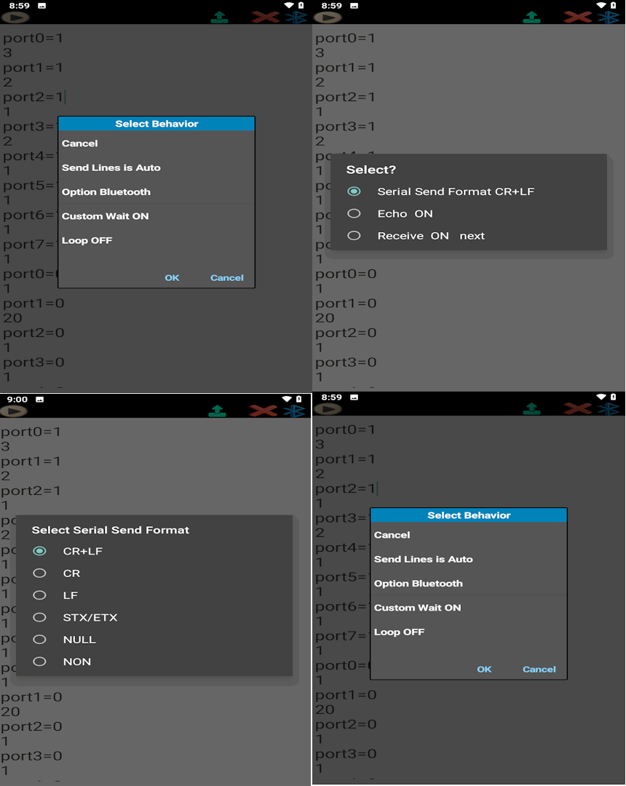
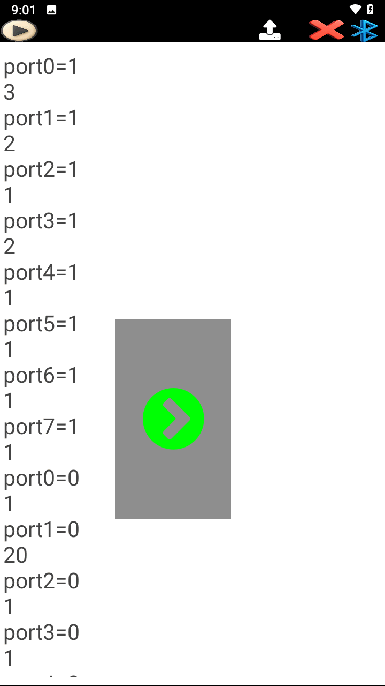

How to Use Note SEND and RECEIVE in SoifGo
The Note feature in SoifGo, with both send and receive functionality, is designed to help you build automation processes using Bluetooth Serial, API, and MQTT communication modes. For example, if you send the joint angles of a three‑axis robotic arm (with encoders) over Bluetooth Serial and store them in a Note, you can later send the same recorded joint values back, and the robot will repeat the exact previous motion.
In another example, if the receiver is a CNC machine and you load CNC codes into a Note, sending that Note will cause the CNC to start executing the commands.
A wide range of creative workflows can be built this way—limited only by the user's imagination.
How to Work with Note SEND
Step 1: Create a Note
First, create a button and set its behavior to Note. Choose Create to generate a blank note. Then go to the Play page, click the button to open the note, and from the menu or play icon select Note send to see the list of communication methods. For example, choose Bluetooth and return to the note. Now you can start writing the required commands line by line.
Step 2: Sending Options
At the top of the page, you will see the Send icon. By long-clicking on this icon, a list of settings will appear:
- Manual Sending: No delay is applied. After clicking the send icon, another icon appears on the screen. Each time you click it, one line is sent. The next click sends the next line, and so on.
- Automatic Sending: Delay settings are applied.
- Custom Wait Off: A single delay time (e.g., 2 seconds) is set at the bottom of the page and applied to all lines equally.
- Custom Wait On: Different delays can be defined for each line, as explained below.
Method 1: Fixed Delay for All Lines (Custom Wait Off)
In this method, every line is sent with the same delay. You simply write the commands normally, and the system applies a uniform delay between each line.
Example:
Here, each command line will be sent one after another with the same delay (e.g., 2 seconds).
Method 2: Custom Delay (Custom Wait On)
In our method, wherever you need a custom delay before executing a command, simply write the desired delay time in seconds as wait=4. This way, upon seeing your command, the system will start counting down and then proceed to send the remaining lines.
Example:
Step 3: Communication Settings
Each communication method (Bluetooth, API, MQTT) has its own specific settings. Below are the main options for Bluetooth (similar concepts apply to API and MQTT):
- Send Format: Choose how each line ends, e.g.
CR+LF,CR,NULL, etc. - Echo: After sending, the same data must be echoed back to Soifgo. If no echo is received, Soifgo retries the send up to 3 times. If still no response, an error is triggered. This ensures reliable delivery of each packet.
- Wait for NEXT: With this option enabled, Soifgo waits for the word
nextorNEXTafter each command. This is useful for tasks with uncertain completion times. Example: A conveyor or crane may take 2–30 seconds to finish moving a heavy load. Once the task is complete, the destination sendsNEXTback, signaling Soifgo to continue with the next line. - Loop On/Off: In automatic sending mode, enabling Loop On makes the note repeat after finishing all lines. With Loop Off, the note stops after one full cycle.
These settings allow you to adapt Note SEND for different devices and scenarios, ensuring both reliability and flexibility in communication.



How to Work with Note RECEIVE
Receiving via Bluetooth
For Bluetooth receiving, you must tap the Bluetooth icon to establish the connection. Each time a text message is sent, it is immediately received and added as a new line in the note.
Receiving via API
In API receiving mode, any incoming value or size change is automatically added as a new line in the note.
Receiving via MQTT
In MQTT receiving mode, every published value or payload change is captured and appended to the note in real time.
Real‑Time Logging
Note RECEIVE can also be used as a real‑time logger for monitoring incoming data from devices.
Additionally, at the top-right of the screen, the Play/Pause icon allows you to pause or resume receiving with a single tap. A long press on this icon opens the settings for API and MQTT.
Practice Example: Using SoifGo with the PC Robot Simulator
This example shows you how to practice Note SEND and Note RECEIVE in SoifGo without needing any hardware. All you need is:
- SoifGo on your phone
- A PC or laptop
- The provided HTML simulator file, which runs directly in a desktop browser (Chrome, Edge, etc.)
The simulator creates a virtual robot point inside a box. You can move the point with your mouse (SEND mode), or let SoifGo move it by sending X/Y coordinates (RECEIVE mode).
1. Open the simulator on your PC
Download and Open the Simulator
Download the simulator file:
📦 Download soifgo_note_send_receive_simulator.zipYou can also open the simulator directly in your browser (PC only):
🖥️ Open soifgo_note_send_receive_simulator.htmlUse this simulator to practice Note SEND and Note RECEIVE with SoifGo over Bluetooth.
Open the HTML file on your computer. You will see two sections:
- Serial Port Manager (connect, send, receive)
- Robot Simulator (a point inside a box)
The simulator uses the Web Serial API, so it works only on desktop browsers.
2. Connect SoifGo to the simulator
On your PC:
- Click "Connect" in the Serial Port Manager.
- Select your Bluetooth serial device (for example HC-05, ESP32, etc.).
- When connected, the button text changes to "Connected" and turns green.
3. Configure SoifGo
Inside SoifGo:
- Open your Note.
- From the menu, choose Note SEND or Note RECEIVE.
- Select Bluetooth as the communication method.
- Make sure your phone is paired with the PC over Bluetooth.
After receiving and sending in SoifGo, select Bluetooth as the Note send/receive method.
4. Practice Note SEND (move the point from SoifGo)
In SoifGo, set the Note to Note SEND with Bluetooth, then write lines like:
Then press the Send icon in SoifGo.
In the simulator on the PC:
- Set the mode button to Mode: RECEIVE.
- The red point inside the box will move to each X/Y position sent from SoifGo.
This simulates controlling a robot arm, CNC head, or any XY device.
5. Practice Note RECEIVE (record the motion path in SoifGo)
In the simulator on the PC:
- Set the mode button to Mode: SEND.
- Drag the red point with your mouse inside the box.
The simulator sends coordinates like:
In SoifGo:
- Set the Note to Note RECEIVE.
- Select Bluetooth as the receiving method.
- Each movement of the point will appear as a new line in the Note.
This simulates recording a robot's motion path with SoifGo.
6. What this exercise teaches you
With this simple setup, you can practice:
- Sending commands from SoifGo to an external device (the PC simulator)
- Receiving live data into a Note in SoifGo
- Building motion sequences using X/Y coordinates
- Testing automation logic without any physical hardware
The HTML simulator file can be executed on a PC and used as a training tool together with SoifGo.